Forecasting Hourly Bike-Sharing Demand in Washington, DC
What temporal structure characterizes hourly bike-sharing demand, and how well can short-term demand be forecast from historical usage, calendar variables, and weather?
Hourly demand is an operations problem,
not just a forecasting exercise.
Source: National Association of City Transportation Officials, Shared Micromobility Report: 2023.
Large hourly swings make station-based systems sensitive to under- and over-estimation.
The project moves from temporal structure to model performance.
Build a complete hourly series from raw Capital Bikeshare records.
Identify demand scale, calendar pattern, weather effects, and dependence.
Compare classical, regression, and neural sequence methods.
Check residual spread, bias, and remaining autocorrelation.
Rank methods on validation and held-out test periods.
Two years of hourly Capital Bikeshare demand, calendar context, and weather.
casual and registered are excluded because they sum to the response.| Variable group | Examples |
|---|---|
| Calendar | hour, weekday, holiday, working day, month, season |
| Weather | temperature, humidity, wind speed, weather condition |
| Demand | total hourly bike rentals |
The raw data are almost hourly; the modeling frame is fully hourly.
Complete hourly indexing prevents irregular gaps from becoming hidden modeling assumptions.
hour.csvDemand is skewed, noisy hour to hour, and seasonal across the two years.
Peak hours are much larger than ordinary hours.
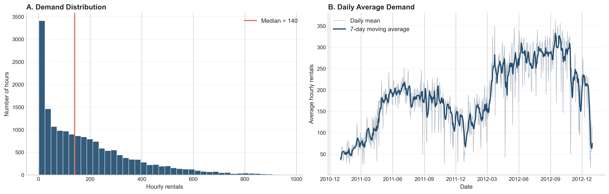
Calendar timing drives the shape of demand.
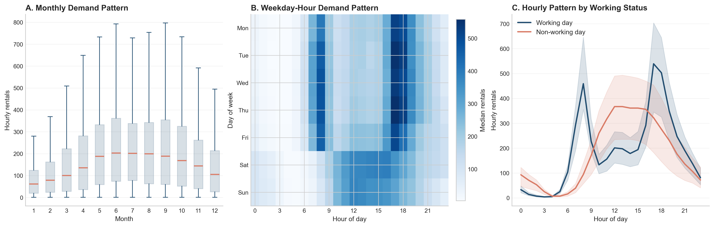
Weather helps explain demand, but it does not replace temporal history.
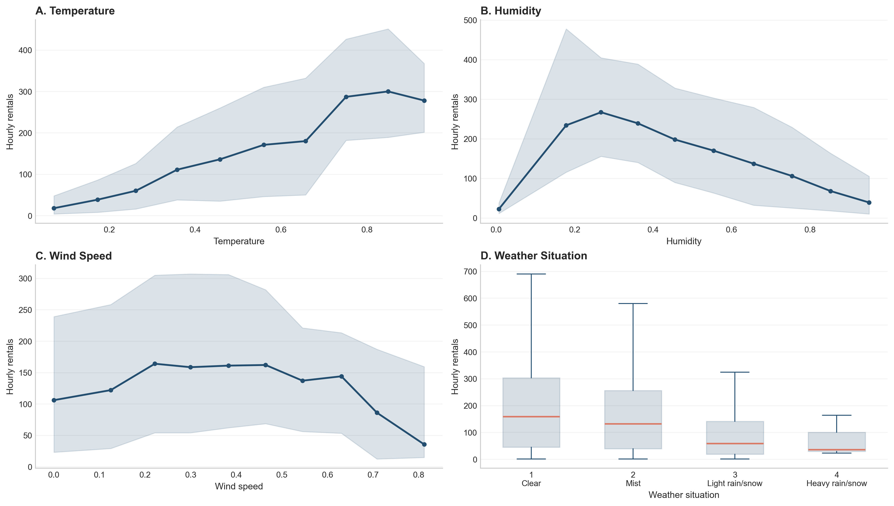
The log scale makes the modeling target more stable.
Raw count variance rises with the mean.
For lagged regression, RNN, and LSTM, the models train on log demand and predictions are converted back to counts before evaluation.
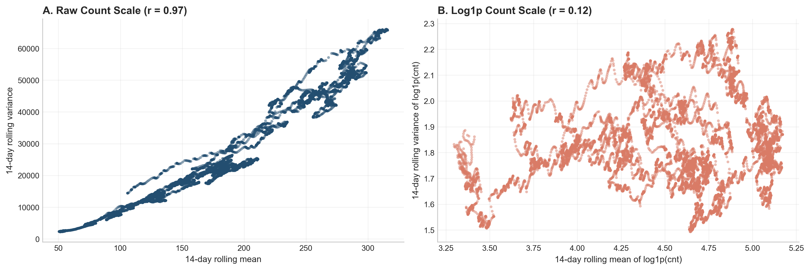
Demand repeats across recent hours, yesterday, and last week.
These three numbers are the backbone of the modeling strategy: short-run, daily, and weekly history all matter.
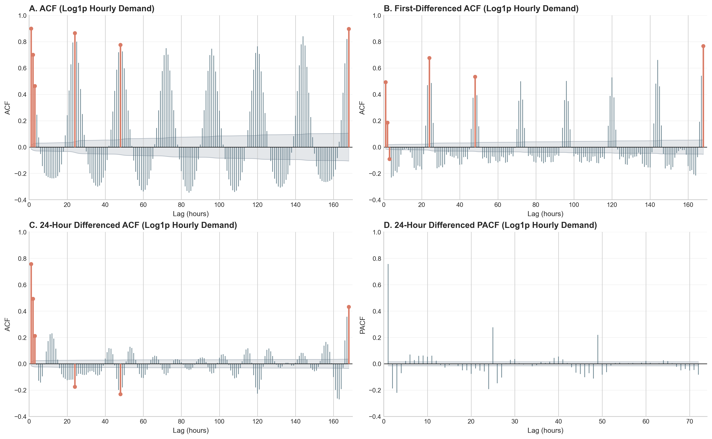
The frequency view confirms the daily cycle is the dominant rhythm.
24-hour differencing directly targets the main daily peak.
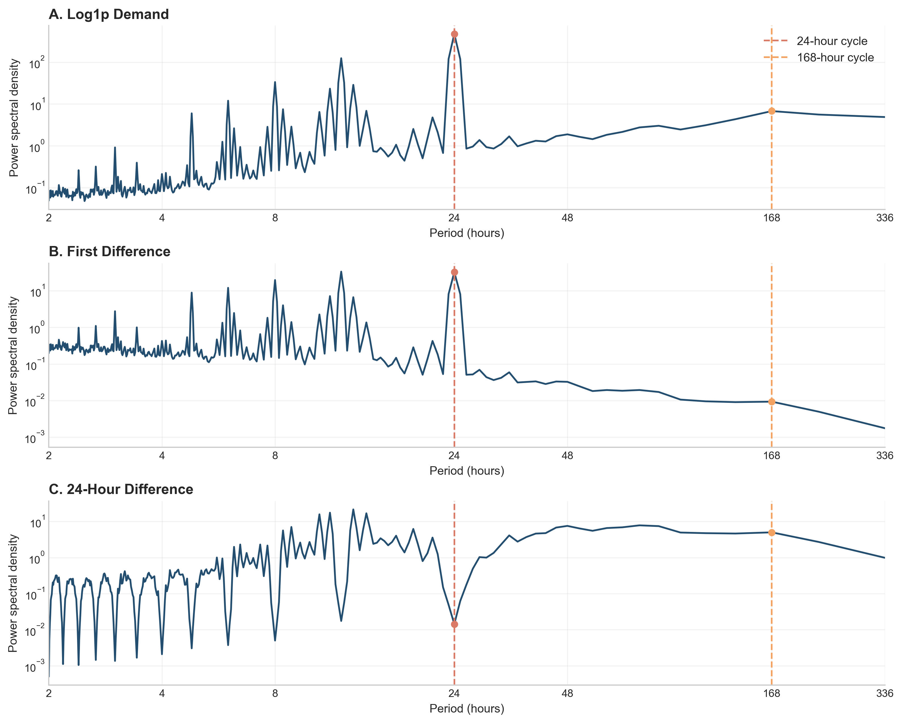
Evaluation mimics forecasting forward in time.
Validation period
Model order, window length, and tuning choices are made before test evaluation.
One-week gaps
The 168-hour gaps reduce leakage from long lagged features.
MAE and RMSE
Every model is compared on the original hourly rental count scale.
ARIMA is the demand-history benchmark.
Use 24-hour differencing, then search low-order ARMA candidates.
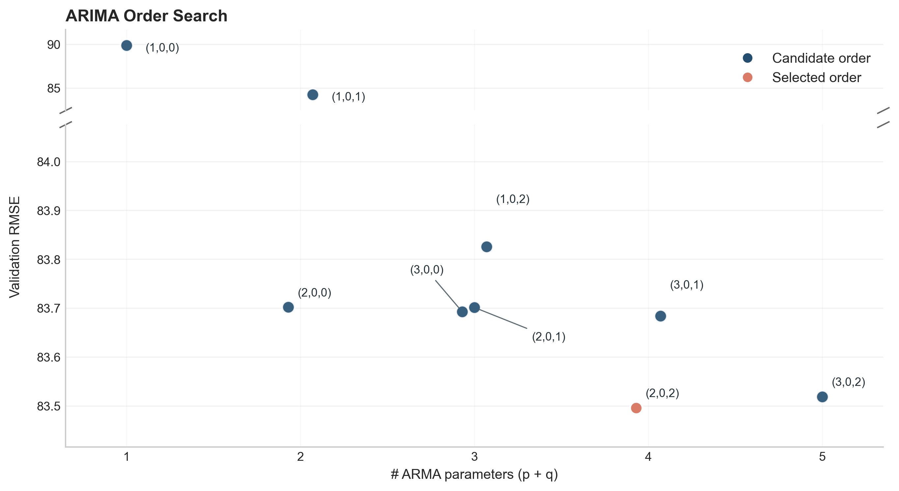
ARIMA diagnostics show what is still missing.
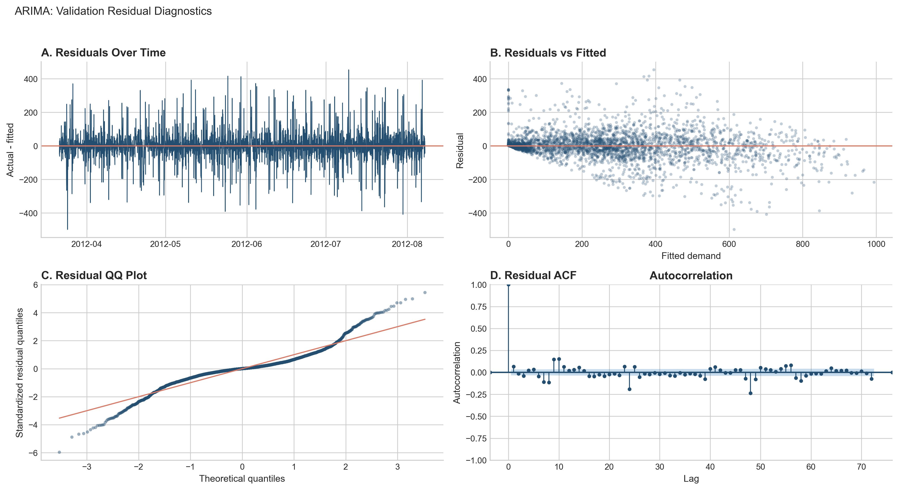
SARIMAX adds covariates, but weekly dependence remains.
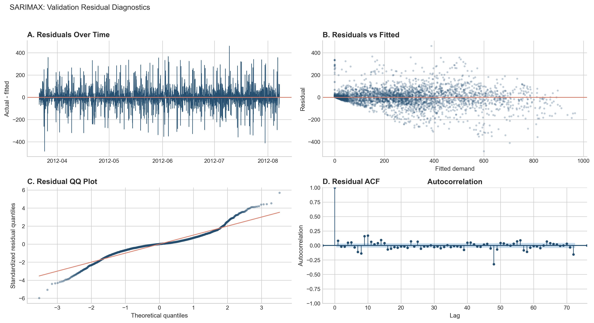
Lagged regression makes the EDA explicit.
The model uses short-run, daily, and weekly lags together with calendar and weather predictors.
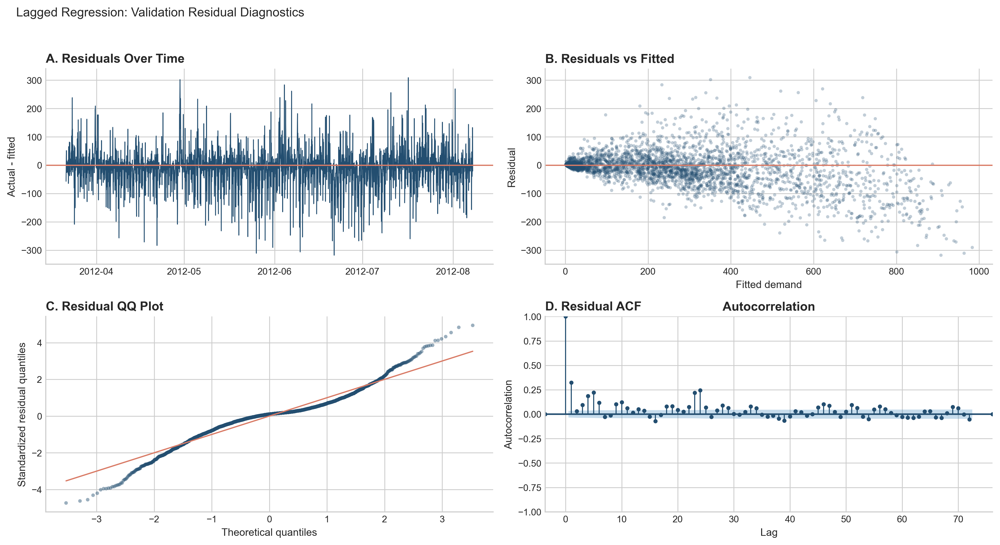
Poisson regression helps, but the counts are overdispersed.
A plain Poisson model assumes conditional mean equals conditional variance. Here the variance is much larger.
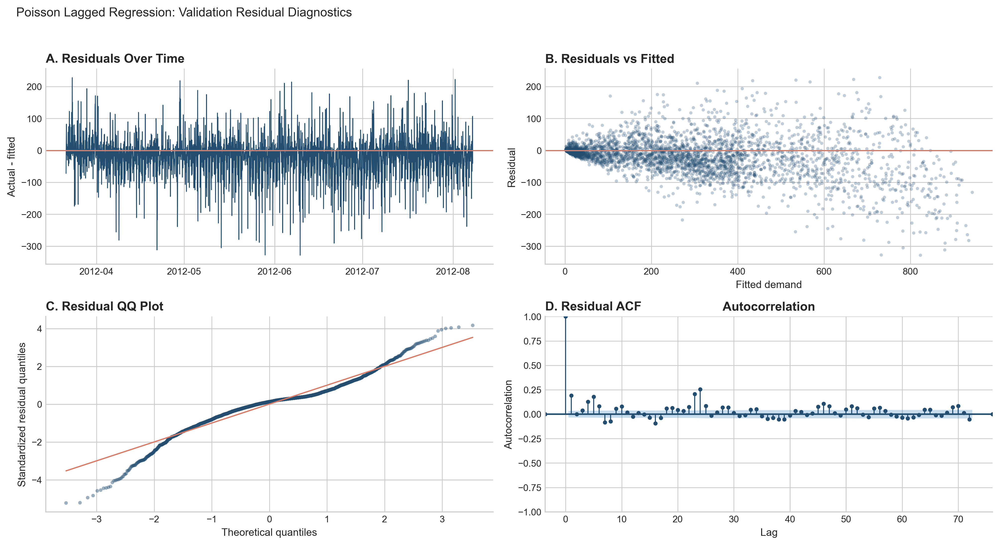
RNN learns from a rolling history window instead of fixed lag columns.
| Window | Validation RMSE | Test RMSE |
|---|---|---|
| 72h | 55.4 | 55.2 |
| 24h | 55.5 | 55.3 |
| 168h | 55.6 | 55.2 |
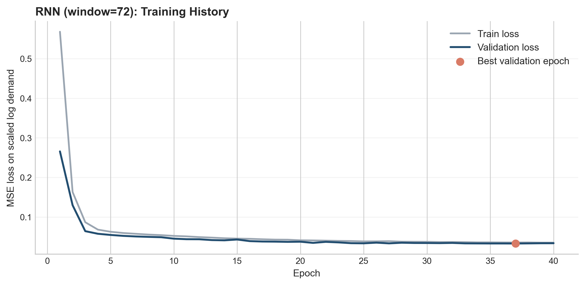
LSTM gives the strongest forecasts in validation and remains strong on test.
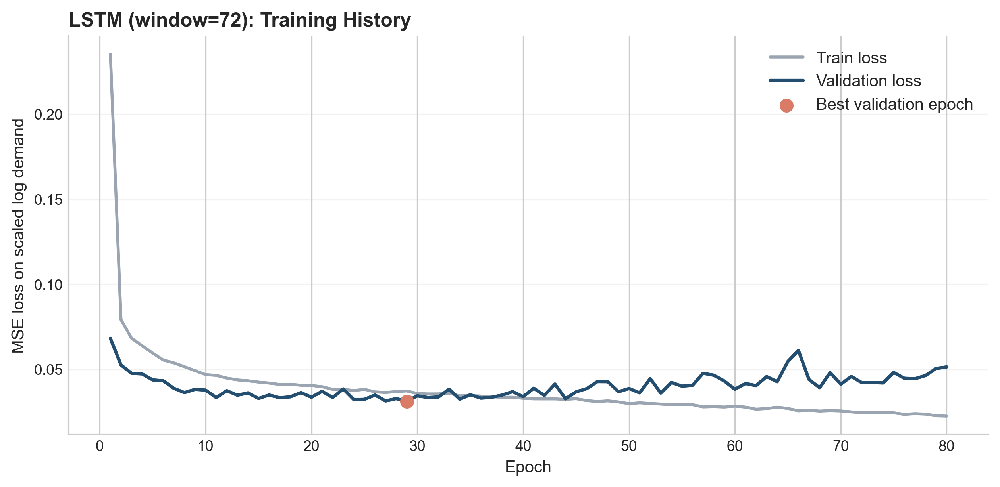
Sequence models win the final comparison, with LSTM clearly ahead.
Test RMSE, lower is better.
The biggest gains come from representing temporal history directly.
Stable baseline
Useful reference point, but misses repeated weekly structure.
Interpretable improvement
Explicit lags make the EDA operational.
Best forecast accuracy
Rolling history windows capture nonlinear hourly behavior.
Most models capture the daily cycle; peak timing and magnitude are harder.
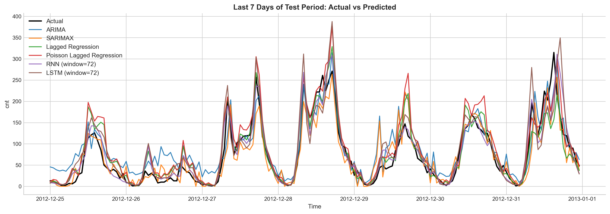
Hourly bike demand is forecastable because it is structured.
Demand repeats across recent hours, daily cycles, weekly rhythms, working-day behavior, seasonality, and weather.
It gives the lowest validation RMSE and remains strong on the held-out test period.
Natural extensions are negative binomial forecasts, probabilistic intervals, and station-level spatial demand.